Install PIP Package Manager
- First you need to install python on you computer
- Open Terminal and enter
python or py
- To download python click here Download lates version of python
- Install it like any other application
- Now enter
pip to check
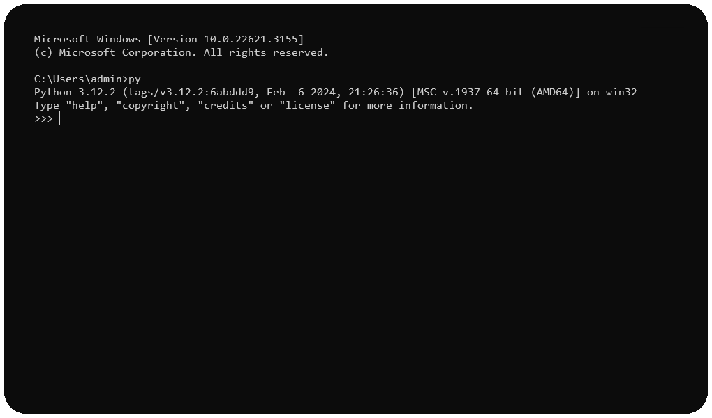
STEP 1
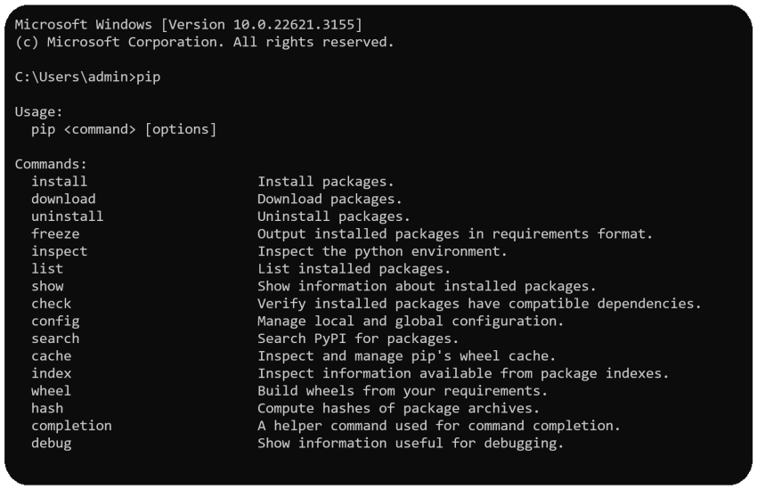
STEP 2
If still pip not working Follow next Steps
- Open search bar on your computer
- Just search
python and click on Open file location
- A new window will open, now right click on the python[your_version] application
- Now click on
Open file location then again a new directory will open
- Find
scripts folder and enter in it
- Copy it's path
- Now search
View advance system setting on windows
- Click open
- In the new pop-up, go to
advance then Environment Variabls...
- In
system variable find path and hit edit
- Click on new add you copied scrpits folder path here and close the application
- Go back to your Terminal hit
pip command, it should work
you are done!
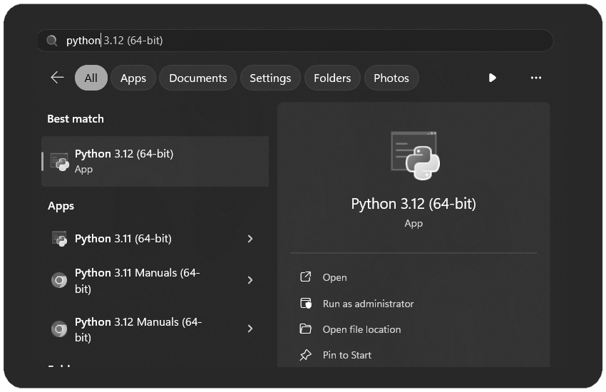
STEP 2
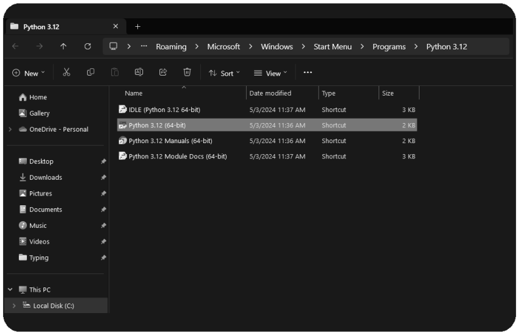
STEP 3
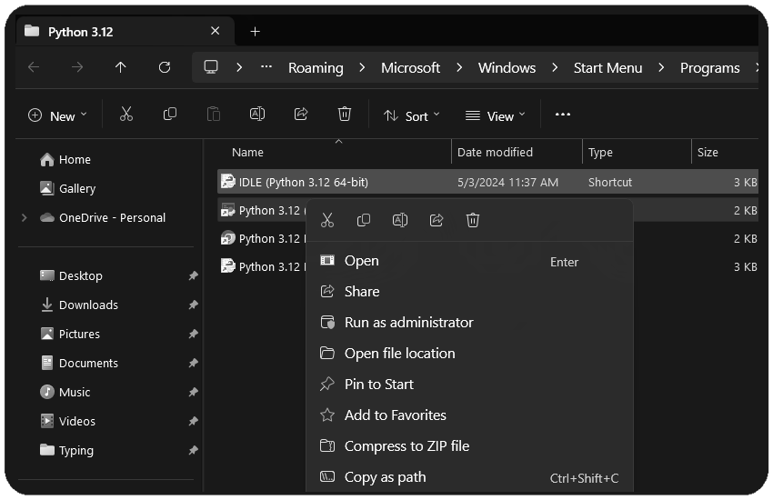
STEP 4
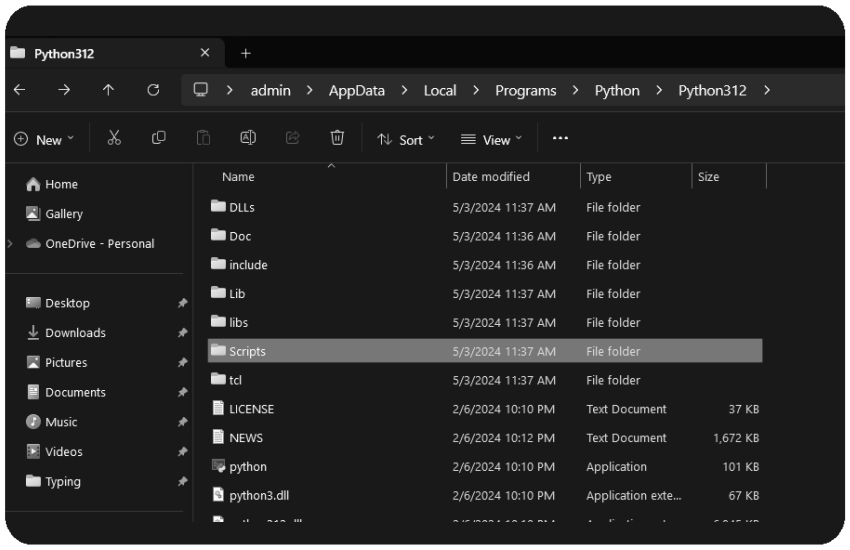
STEP 5
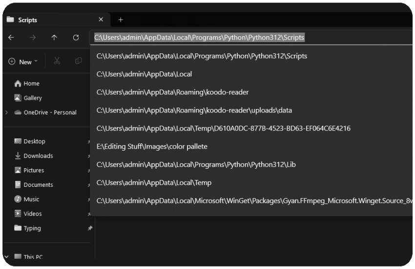
STEP 6
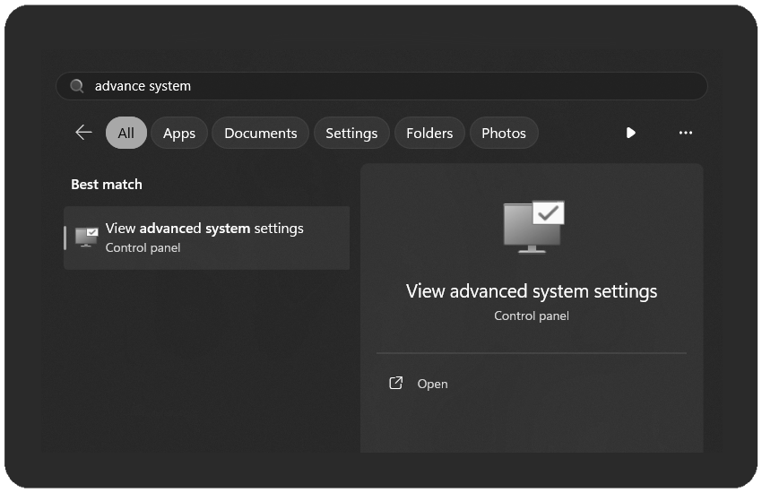
STEP 7
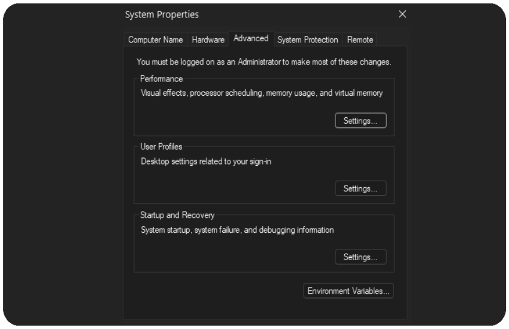
STEP 8
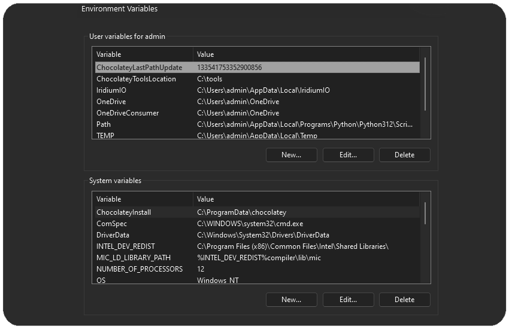
STEP 9
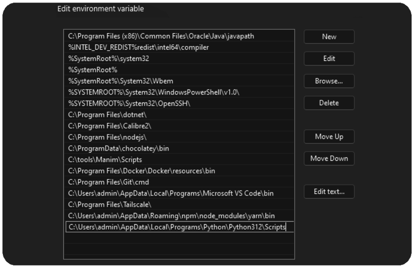
STEP 10
STEP 11